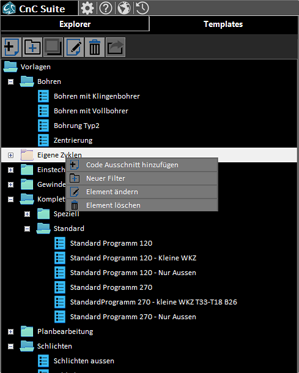
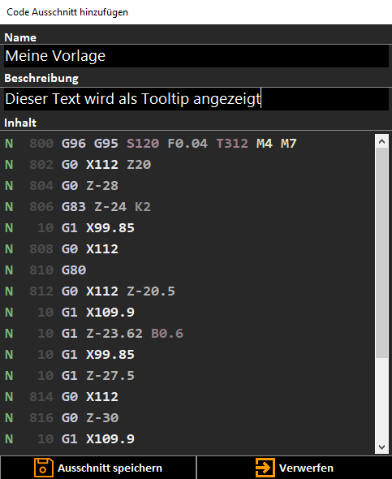

Über den Vorlagen-Manager können Vorlagen erstellt, organisiert und eingefügt werden. Wie auch beim Datei-Explorer können Vorlagen über das Kontext-Menü oder über die Toolbar erstellt werden.
Ein Beispiel-Programm zur Verwendung der Vorlagen habe ich HIER bereitgestellt.
Durch die Schaltfläche 'Ausschnitt hinzufügen' wird ein Eingabe-Fenster geöffnet.

Dort kann der Name der Ausschnittes, eine Beschreibung des Ausschnittes und
der eigentliche Inhalt eingegeben werden. Wurde vorher im Editor ein Text-Ausschnitt markiert ist dieser
automatisch als Inhalt gesetzt.
Die Beschreibung des Ausschnittes ist als Tooltip sichbar wenn mit der Maus über das entsprechende Element im Ausschnitt-Manager gezeigt wird.
Alle Elemente des Ausschnitt-Managers können über Toolbar oder Kontext-Menü nachträglich geändert werden.
Filter dienen wie Ordner der Organisation der Ausschnitte und können wie diese verwendet werden, haben jedoch keine physische Entsprechung im Dateisystem. Sollte ein Filter der noch Ausschnitte enthält gelöscht werden, so werden die enthaltenen Ausschnitte dem übergeordneten Filter zugeordnet.
Der Speicherort der Ausschnitte ist im Dokumenten-Ordner im Unterverzeichnis CnC-Suite/Templates. Dieser Ordner darf nicht entfernt oder umbenannt werden, ansonsten kann es zu Funktionsstörungen der Anwendung kommen.